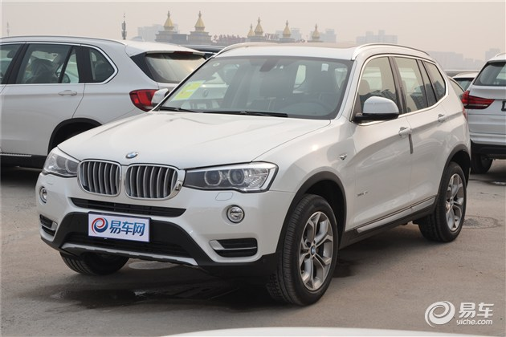
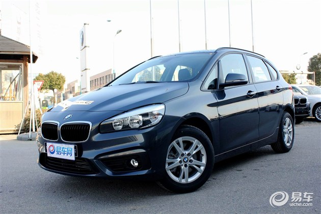
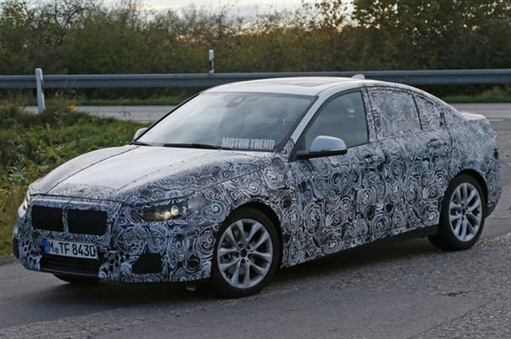
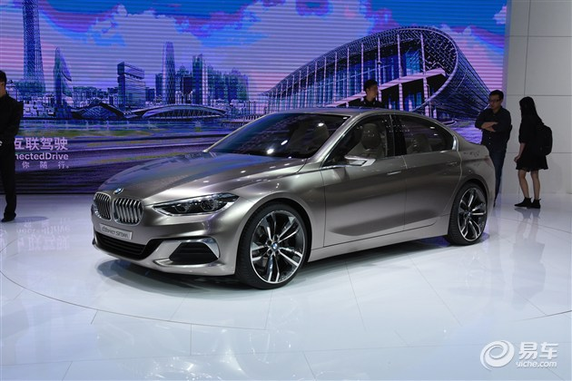

NEWS
宝马2016年或国产多款车型 X3/1系三厢等
2016年01月22日 11:40 来源：易车 作者：杨淞文
近日有消息称，宝马将在2016年国产多款车型，其中包括X3、2系运动旅行车和一款全新紧凑级车型，按照目前已知消息看，该车型或为1系三厢版。
X3（进口）
面对来自奥迪Q5和奔驰GLC的压力，宝马X3终于要走上国产道路，但与对手相比，X3似乎来得有些太迟了，想从对手手中分得一杯羹？前景堪忧。
2系运动旅行车（进口）
虽然厂家将其定位为运动旅行车，但花上27.99万-34.99万元您所买到的仍然只是一款紧凑级轿车。3缸1.5T发动机与几乎史无前例的横置前驱布局也没让人对2系运动旅行车报以太多运动的希望。但愿4月的北京车展上市后在价位上能有惊喜，以提高其性价比。
1系三厢版谍照
compact sedan概念车
宝马1系三厢版弥补了现阶段宝马在紧凑级三厢车方面的空白，只是这台造型小巧灵动的车依然采用了前驱平台打造，将搭载3缸1.5T发动机和4缸2.0T发动机，后者听起来还算令人期待。但不知道还有多少人至今仍无法接受“前驱宝马”这个现实。
责任编辑：杨淞文